Абиссинская кошка
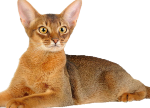Абиссинская кошка – восточная красавица с самой древней историей. Её отличает необычный вид шерсти, из-за которого абиссинцев сравнивают с пумой и называют кроличьей кошкой. Однако завести аби в качестве домашнего питомца могут позволить себе не многие. Стоят кошки дорого.
Цена: 899$
Австралийская дымчатая кошка
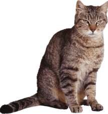Австралийская дымчатая кошка, или австралийский мист (англ. Australian Mist), — порода домашних кошек, выведенная в Австралии на основе местных дворовых кошек, завезённых сюда, с кошками бирманской и абиссинской породы. Является единственной породой кошек, выведенной в Австралии
Цена: 399$
Американский Бобтейл (длинношерстый)
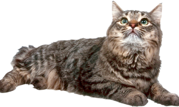Американский бобтейл – достаточно молодая порода, родоначальник был обнаружен в 1965 г. Произошло это так: супружеская пара Сандерс нашла брошенного котенка неподалеку от индейской резервации в штате Южная Аризона. Котенок как котенок, если бы не одно «но»: у него был короткий
Цена: 599$
Американская Жесткошёрстная
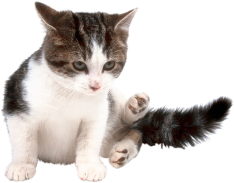Американская жесткошёрстная кошка — порода короткошёрстных кошек со своеобразным строением шерсти. Другое название этой породы — проволочношёрстная, или проволочная кошка, которое эти кошки получили за необычный внешний вид шерсти животного, напоминающей пружинки.
Цена: 399$
Аравийский Мау
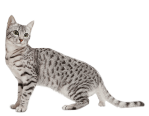Аравийский мау произошёл от диких пустынных кошек, которые обители на Аравийском полуострове более 1000 лет назад. Аравийские мау могут легко переносить жару (это качество передалось им от предков). Аравийские мау долго оставались дикими котами
Цена: 299$
Анатолийская
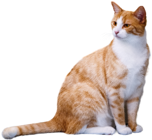Анатоли́йская ко́шка — порода кошек, признанная Всемирной федерацией кошек. Анатолийская кошка считается аборигенной, естественной породой, сформировавшейся на Армянском нагорье в условиях территории вокруг озера Ван. У этих кршек достаточно высокий интеллект для животных
Цена: 399$
Бенгальская кошка
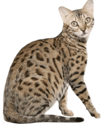Бенгальская кошка, бенгал — межродовой гибрид домашней кошки (Felis catus) и собственно бенгальской кошки (Prionailurus bengalensis). История породы началась в 60-х годах прошлого века, в доме любительницы кошек Джейн Милл в США.
Цена: 299$
Бомбейская кошка
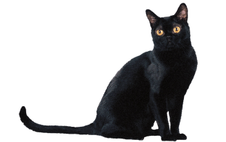Бомбейский феномен (система групп крови Бомбей, или H) является видом неаллельного взаимодействия (рецессивный эпистаз) гена h с генами, отвечающими за синтез агглютиногенов группы крови системы AB0 на поверхности эритроцитов.
Цена: 599$
Бурма
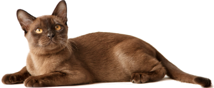Бу́рма[1], или бурманская короткошёрстная кошка — порода короткошёрстных кошек. Кошку бурманской породы отличает мускулистое, крепкое тело, короткая блестящая шерсть, большие округлые глаза жёлтого цвета.
Цена: 399$
Тонкинская кошка
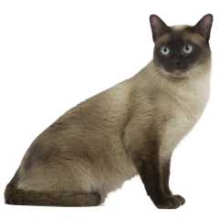Тонки́нская ко́шка (англ. Tonkinese — тонкинез) — гибрид тайской и бурманской кошки американского типа. Внешне тонкинская кошка — нечто среднее между её предками: очертания более округлы, чем у тайской, вес и ширина меньше, чем у бурманской. Её вес варьируется от 2,5 до 5,5 килограммов.
Цена: 399$
Сингапурская кошка
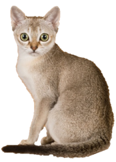Сингапурская кошка (другое название сингапура) — порода короткошёрстных кошек небольшого размера и восточного типа, с гладкой шерстью, имеющая характерный только для этой породы золотисто-кремовый окрас.Сингапурская кошка весит от 2 до 3 кг, характерный породный окрас у котят появляется к 6 месяцам.
Цена: 399$
Азиатская табби
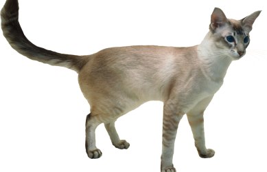Тонки́нская ко́шка (англ. Tonkinese — тонкинез) — гибрид тайской и бурманской кошки американского типа. Внешне тонкинская кошка — нечто среднее между её предками: очертания более округлы, чем у тайской, вес и ширина меньше, чем у бурманской. Её вес варьируется от 2,5 до 5,5 килограммов.
Цена: 399$
Селкирк-рекс

Селкирк-рекс (англ. Selkirk Rex) — порода кошек, которая появилась в США в 1987 году.Это одна из самых молодых пород. В становлении породы принимали участие персы, экзоты и британцы. Официально признана только в 1992 году, в России появилась в конце 1990-х годов. Порода несёт ген кудрявой шерсти.
Цена: 499$
Саванна
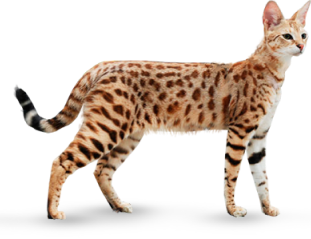Саванна — порода кошек. Гибрид домашней кошки и сервала. Эту породу начали разводить в США в 2001 году. Селекционеры стремились создать домашнюю кошку большого размера с экзотическим диким окрасом, но с покладистым характером домашней кошки.
Цена: 699$
Русская голубая кошка
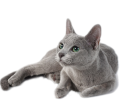Селкирк-рекс (англ. Selkirk Rex) — порода кошек, которая появилась в США в 1987 году.Это одна из самых молодых пород. В становлении породы принимали участие персы, экзоты и британцы. Официально признана только в 1992 году, в России появилась в конце 1990-х годов. Порода несёт ген кудрявой шерсти.
Цена: 399$
Рэгдол
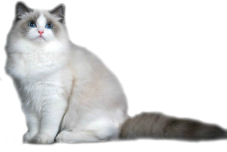Рэгдо́лл (англ. Ragdoll — «тряпичная кукла») — порода крупных полудлинношёрстных кошек. Порода выведена в США в 1960-х годах заводчиком персидских кошек из Калифорнии Энн Бейкер. Кошки отбирались по наиболее мягкому характеру, в результате чего они могут полностью расслабляться на руках у человека, что и дало название породы.
Цена: 599$
Норвежская лесная кошка
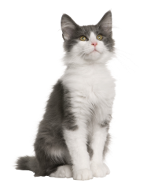Норве́жская лесна́я ко́шка — порода полудлинношёрстных кошек, наиболее распространена в странах Северной Европы. В Норвегии порода известна как Skogkatt или Skovkatt (от «skog» и «skov», означающих «лес» на различных норвежских диалектах) и Norsk Skogkatt (Норвежская лесная кошка) и объявлена официальной породой Норвегии.
Цена: 499$
Экзотическая короткошёрстная кошка
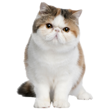Экзоти́ческая короткошёрстная кошка (экзо, экзот) — искусственно выведенная порода короткошёрстных кошек. Экзоты внешне схожи с кошками персидской породы. Экзот — коренастая, крепкая и, в то же время, компактная кошка с большой круглой головой, большими круглыми выразительными глазами, выраженными щечками
Цена: 6 99$